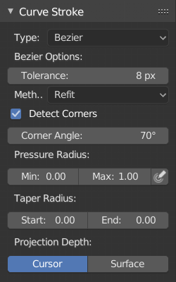

绘制曲线¶
参考
- 模式
编辑模式
- 面板
- 菜单
- 快捷键
Shift-LMB
曲线绘制工具用于手绘曲线。
笔触选项¶

曲线笔画面板。¶
可以找到下面的选项。
- 类型
绘制的曲线类型。
- 多段线
直线段组成的贝塞尔曲线(自动手柄)。
- 贝塞尔
- 容差
值越低越接近绘制笔迹，相反，值越高结果更加平滑。
- 方法
- 重复匹配
逐步地重新绘制曲线(给出最好的结果)。
- 拆分
拆分曲线直到满足容差值(给出更好的绘画性能)
- 侦测拐角
侦测拐角，并使用非对齐控制柄。
- 拐角角度
大于该角度的任何角度视作拐角。
- 压感半径
- 最小值
低压时的最小半径(也就是锥化时的最小半径)
- 最大值
压力最大时(或者不使用绘图板时)的半径。
- 投射深度
用于控制绘制曲线位置和方向的选项。
- 游标
使用游标所在平面为绘制平面。
- 面
使用其他物体表面作为绘制平面。
- 偏移量
曲线相对表面的偏移距离。
- 绝对偏移
应用定值偏移(不能使用曲线半径缩放)。
- 仅第一点
使用笔画起点确定绘制平面深度。
- 垂直于表面
绘制平面垂直于表面。
- 对齐表面
绘制平面对齐投影表面。
- 视图
绘制平面与视图平面平行。